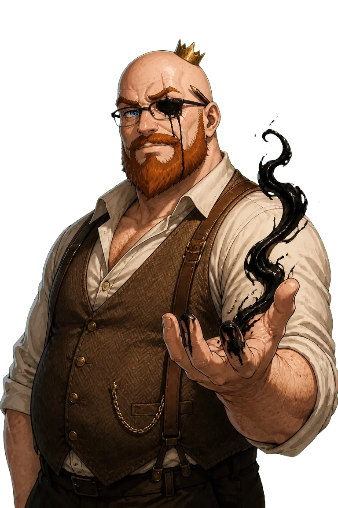
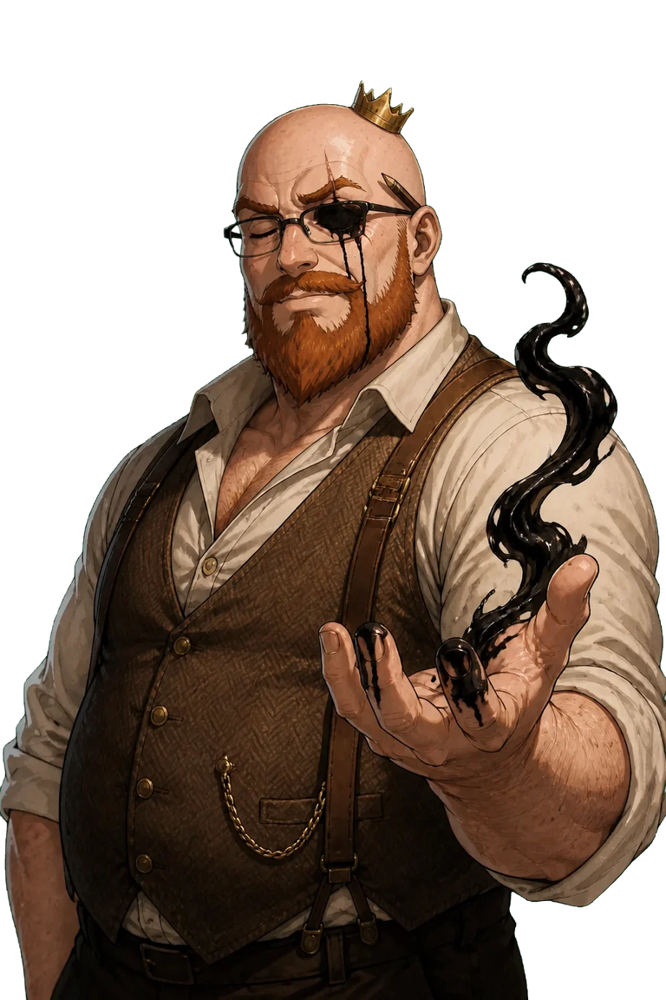
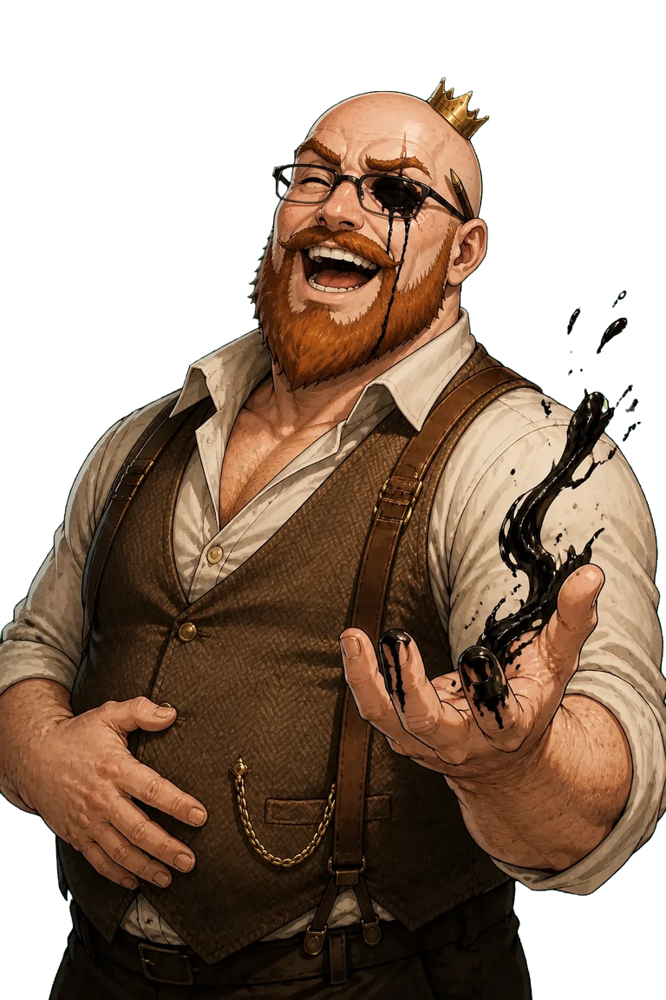
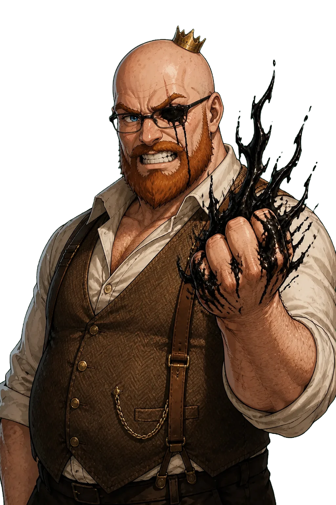
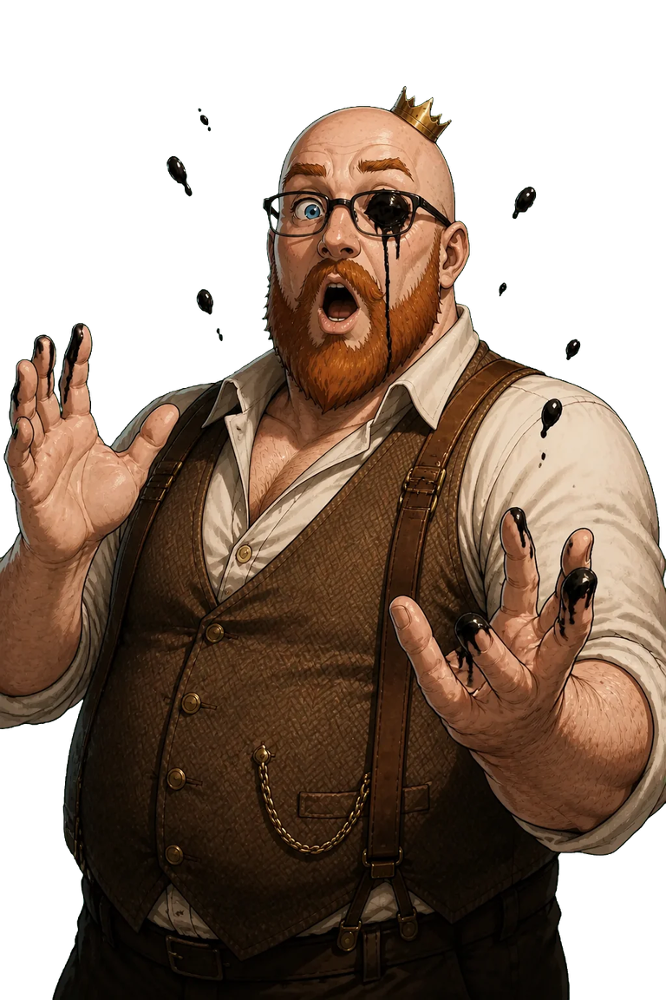
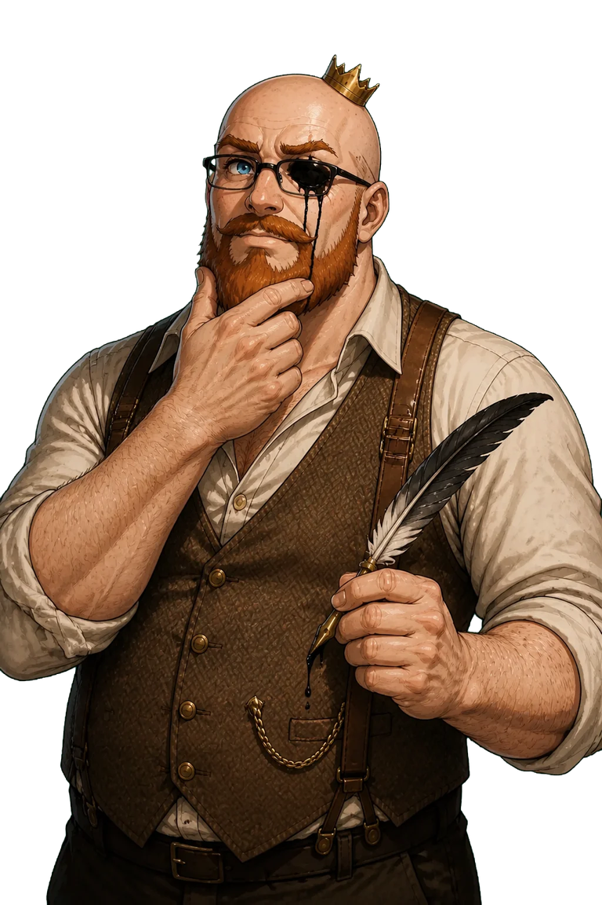

Magi Grimm Stream Kit
OBS browser sources and avatar art. Add each page as a Browser source at 1920×1080 (tick "Shutdown source when not visible" so animations restart).
Scenes
| Starting Soon | https://www.recusantcrown.com/stream/soon.html?min=5Leave off ?min=5 for no countdown. |
| Be Right Back | https://www.recusantcrown.com/stream/brb.html |
| Ending | https://www.recusantcrown.com/stream/end.html |
| Live overlay | https://www.recusantcrown.com/stream/live.html?tag=Deck%20buildingNameplate and a "Marginalia" chat frame; put your chat source inside the frame. &chat=0 hides the frame. |
| Avatar | https://www.recusantcrown.com/stream/avatar.htmlIdle loop on a transparent background. In OBS, right-click the source, Interact, and press 1 talk, 2 laugh, 3 angry, 4 surprised, 5 thinking. ?pose=talk locks a pose. |
PNGtuber poses
Transparent PNGs for Veadotube Mini or PNGTuber Plus: idle and blink for quiet, talk for speaking.


idletalk


blink

laugh

angry

surprised

thinkingLoops, backdrops, sounds
Animated loops (WebM with transparency, OBS Media source): idle, talk, laugh, angry, surprised, thinking.
Backdrops: study, storybook.
Stingers: ink splash, book slam, quill flourish.


Art by Magi Grimm with RFab.ai. CC BY-SA 4.0.